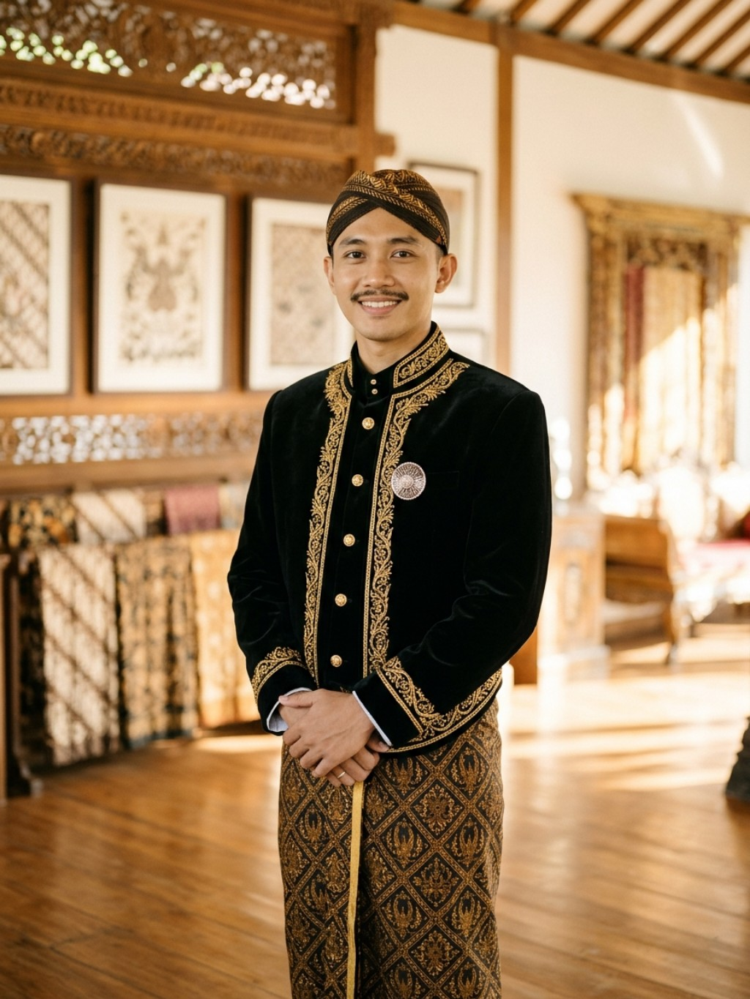
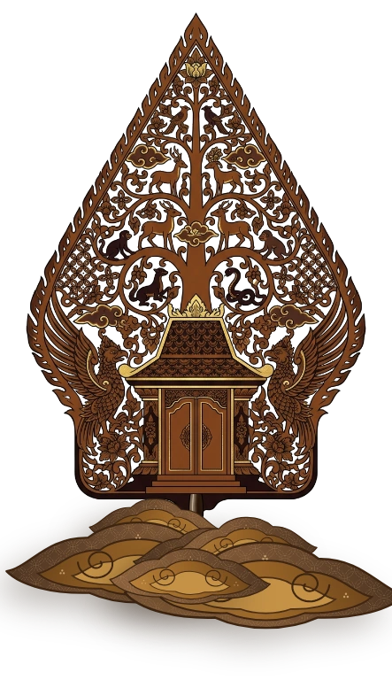
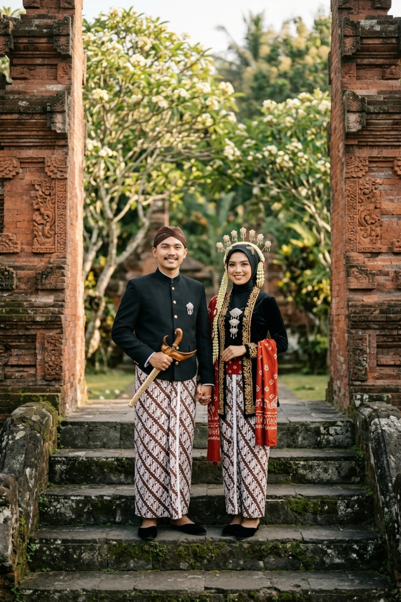
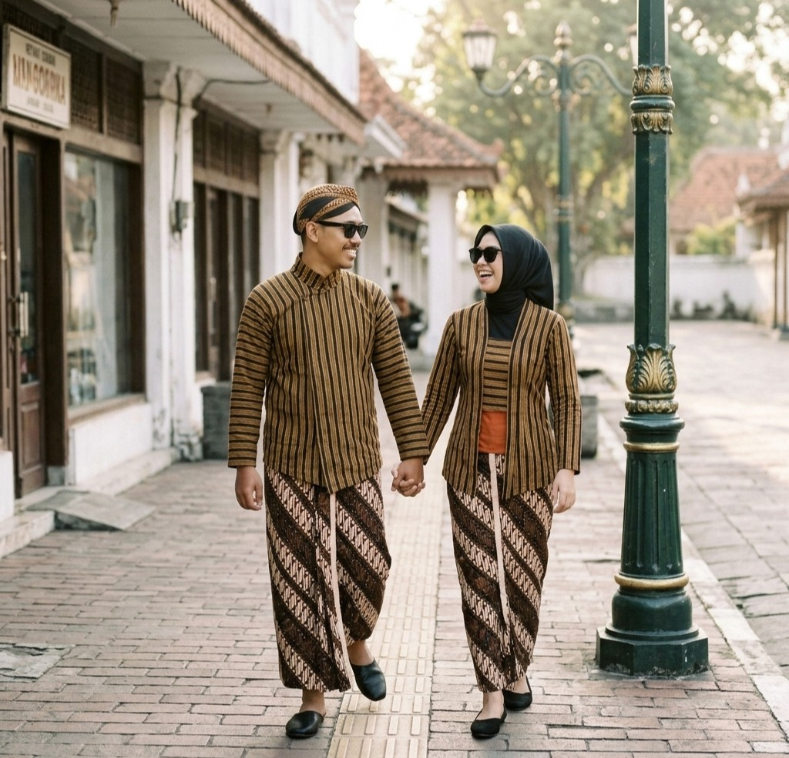
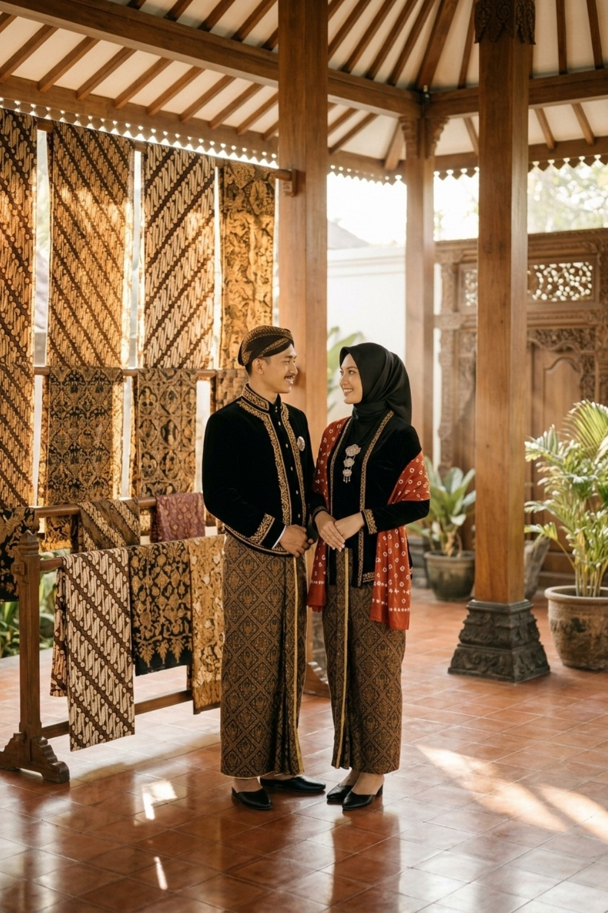
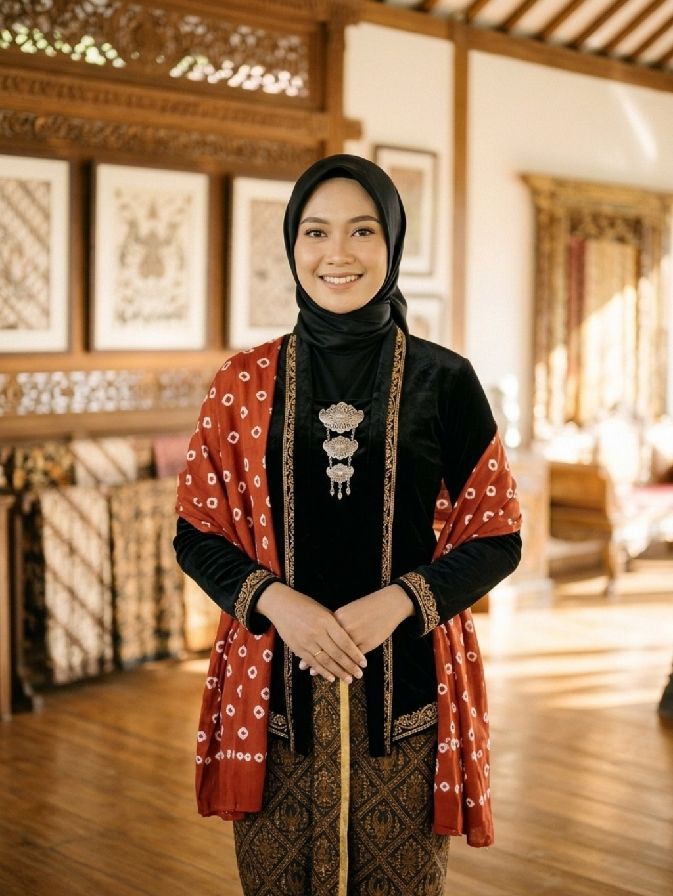
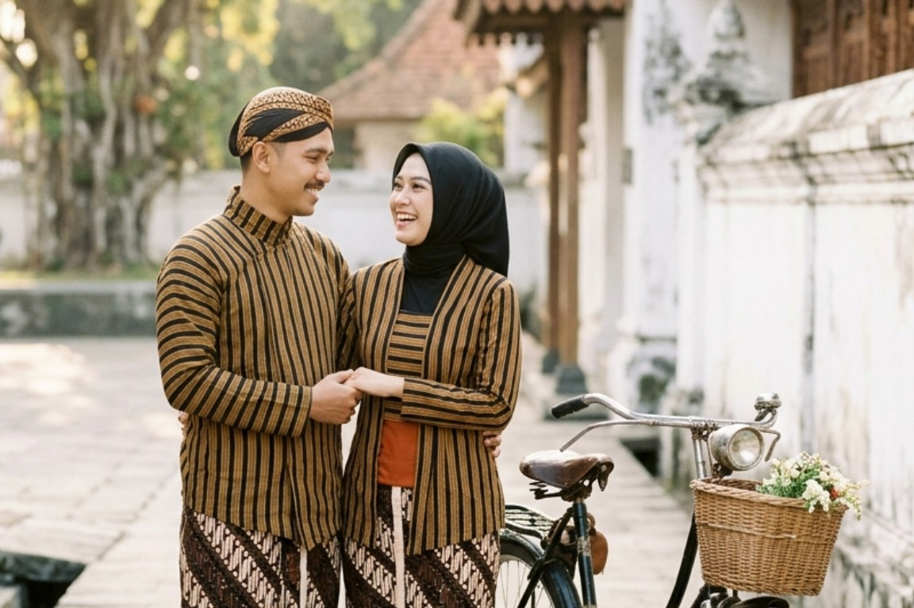
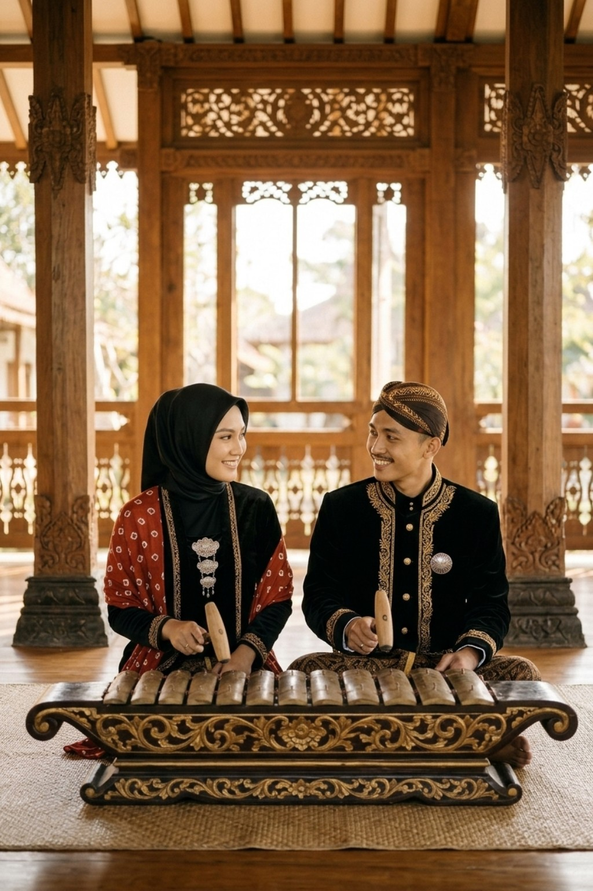
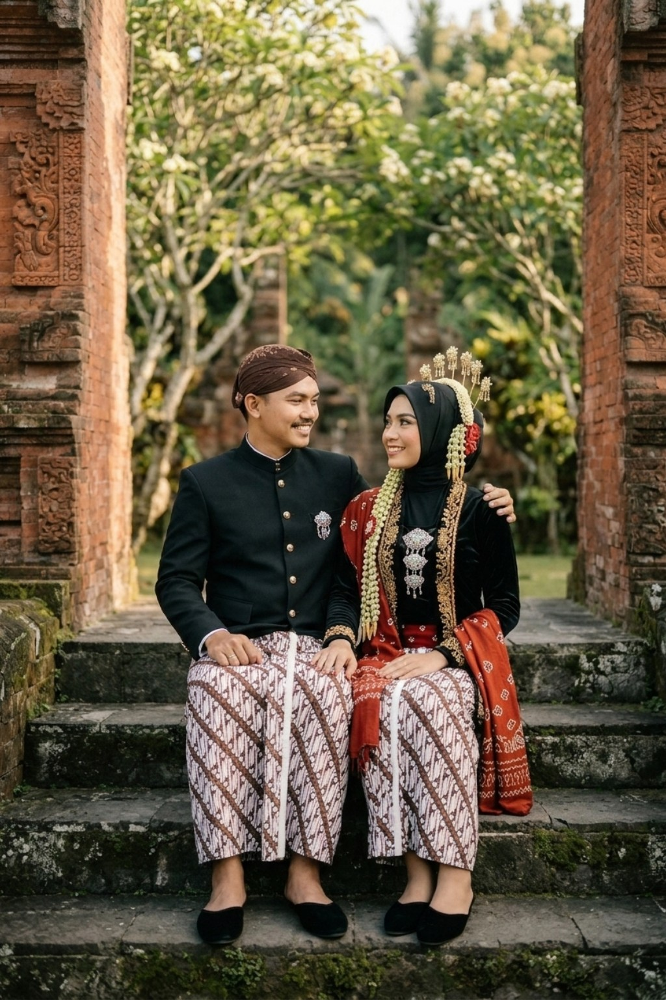

The Royal Javanese Wedding of
Habib & Adiba
28 . 12 . 2026 — Kediri, Jawa Timur



00
Hari
00
Jam
00
Menit
00
Detik
Assalamu’alaikum Wr. Wb.
Dengan memohon rahmat dan ridho Allah Subhanahu Wa Ta’ala, perkenankan kami merangkai ikatan suci pernikahan putra-putri kami:
“Dan di antara tanda-tanda (kebesaran)-Nya ialah Dia menciptakan pasangan-pasangan untukmu dari jenismu sendiri, agar kamu cenderung dan merasa tenteram kepadanya, dan Dia menjadikan di antaramu rasa kasih dan sayang.” — QS. Ar-Rum : 21 —
Mempelai Berbahagia
Putra & Putri Terbaik

Wanci & Panggenan
Rangkaian Pawiwahan
08.00
WIB
10.00
WIB – Selesai
Tasyakuran & Pahargyan
Resepsi Pernikahan
Kediaman Mempelai Wanita
Ds Pagu, Wates, Kediri, Jawa Timur
Live Streaming Virtual
Saksikan prosesi pernikahan kami secara daring bagi kerabat yang berhalangan hadir langsung.
Gabung Siaran Langsung
Lampah Tresna
Untaian Kisah Kami
-
I

Babak PertamaAwal Cerita
Berawal dari pertemuan sederhana di bangku kuliah, percakapan hangat tentang mimpi dan keluarga menumbuhkan rasa saling menghormati yang tulus di antara kami.
-
II

Babak Keduakhitbah & Lamaran
Dengan restu kedua keluarga besar, kami mengikat janji keseriusan dalam prosesi lamaran penuh khidmat untuk melangkah menuju ibadah terpanjang.
-
III

28 Desember 2026Pawiwahan Suci
InsyaAllah pada hari yang diberkahi ini kami menyempurnakan separuh agama dalam ikatan suci pernikahan adat Jawa yang sakinah, mawaddah, warahmah.
Potret Kebahagiaan
Galeri Momen
Tali Asih
Amplop & Tanda Kasih
Doa restu Anda merupakan karunia terindah bagi kami. Namun apabila memberi adalah ungkapan tanda kasih, Anda dapat menyalurkannya melalui:

Nomor Rekening BCA
12345678
a.n. Habib Yulianto
Alamat Pengiriman Kado
- Penerima
- Habib Yulianto
- No. Telepon
- 1234567890
- Alamat
- Ds Pagu, Kec. Wates, Kab. Kediri, Jawa Timur
Buku Tamu & Konfirmasi
Doa & Restu
0
InsyaAllah Hadir
0
Berhalangan